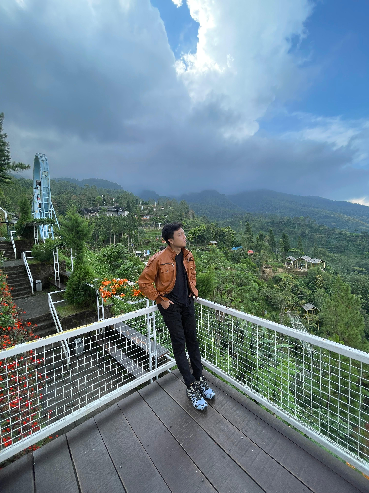

E-Portfolio PPG-PPL Informatika
E-portofolio Ibnu Allika
PPG Prajabatan Gelombang 1 2026 — Informatika

Tentang
About Me
Saya adalah seorang guru/mahasiswa PPG Prajabatan bidang Informatika yang bersemangat dalam mengembangkan pembelajaran inovatif berbasis teknologi. Portfolio ini merupakan dokumentasi perjalanan saya selama mengikuti program PPG, mencakup modul ajar, media pembelajaran, dan berbagai karya yang telah dihasilkan. Silakan edit teks ini dengan deskripsi Anda sendiri.
Pendidikan
S1 — Universitas Negeri Semarang
S2 — Universitas Negeri Yogyakarta
Pengalaman
Tim Penelitian LPMP UNNES 2024
SE Universitas Negeri Yogyakarta 2025 - Sekarang
Dokumen
Modul Ajar
Interaktif
Media Pembelajaran
Dokumentasi
Asistensi & Pembelajaran Terbimbing
Pretest & Posttest
Instrumen Penilaian Penyusunan Perangkat Pembelajaran
Insturmen Penilaian Praktik Mengajar
Praktik Pembelajaran Terbimbing
Insturmen Penilaian Praktik Mengajar
Refleksi Praktik Mengajar
Refleksi PPL Terbimbing
Refleksi PPLT
Portfolio ini memuat refleksi akhir praktik pengalaman lapangan terbimbing, filosofi mengajar, serta dokumen pendukung yang menunjukkan perjalanan pembelajaran saya dari observasi, asistensi, hingga siklus refleksi dan penilaian.
Nama
Ibnu Allika Prabo Warasto
Bidang Studi
PPG Informatika A
Sekolah PPL
SMK Negeri 2 Depok
Fokus
Refleksi & Filosofi Mengajar
Profil Sekolah
Sekolah SMK Negeri 2 Depok memiliki visi membentuk murid yang berkarakter, kompeten, dan berwawasan lingkungan. Kurikulum, tata kelola, dan sarana-prasarana mendukung pembelajaran yang berorientasi pada perkembangan murid.
Lingkungan Belajar
Dalam Pembelajaran menunjukkan murid cenderung interaktif, namun masih perlu strategi wait time, scaffolding, serta pengelolaan lab komputer agar lebih efektif dan merata.
Arah E-Portfolio
E-Portfolio menekankan refleksi akhir praktik mengajar dan penguatan filosofi pembelajaran. Semua bukti yang tampil merupakan kelanjutan dari proses yang telah dijalani secara konsisten.
Siklus 1
HaKI, lisensi, profesi
Apersepsi kontekstual, studi kasus produk digital, dan refleksi kecepatan berbicara guru.
Siklus 2
PBL perkakas digital
Nilai pretest 87,71 naik ke posttest 96,57; media digital mendukung keterlibatan aktif.
Siklus 3
Google Docs & surat lamaran
Murid aktif, namun manajemen waktu dan penutupan pembelajaran masih perlu diperbaiki.
Hasil GP
77,50 → 88,75
Performa pembelajaran meningkat dari siklus awal hingga akhir.
Bukti Dokumen
Lampiran Lembar Kerja
Orientasi & Observasi
Profil sekolah, tata kelola, serta visi-misi yang mendasari penyusunan pembelajaran.
Observasi Lingkungan Belajar
Karakter murid, laboratorium komputer, dan kebutuhan strategi pembelajaran yang sesuai.
Asistensi Mengajar
Refleksi pelaksanaan pembelajaran dan pengalaman berinteraksi dengan murid.
Refleksi Siklus 1
Eksplorasi HaKI, lisensi, profesi informatika, serta evaluasi awal proses mengajar.
Refleksi Siklus 2
Dokumen penilaian serta keseimbangan antara hasil belajar dan strategi pembelajaran yang diterapkan.
Refleksi Siklus 3
Refleksi terakhir yang menjadi penutup perjalanan PPL terbimbing secara utuh.
Semester 1 Terbimbing
Refleksi Mata Kuliah Semester 1
Semester 2 Mandiri
Refleksi Mata Kuliah Semester 2
PPL Mandiri
Refleksi PPL Mandiri
Hubungi
Contact
ibnuallikapw@gmail.com
Telepon
+62 812 1853 4459
Lokasi
Kota, Yogyakarta